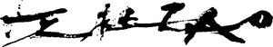

Trade Mark Journal No.2026/011 13 March 2026
WO0000001294275 (2,14,16,18,21,24,25,27,33)
Office of origin: France
Date of International Registration:9 November 2015
Date of designation in the UK:
10 November 2025

- Class 2
- Paints; varnishes; lacquers (paints); preservatives against rust and against deterioration of wood; dyestuffs; mordants; raw natural resins; metals in foil and powder form for painters, decorators, printers and artists; colorants for beverages or foodstuffs; printing inks; inks for skin-dressing; coatings (paints).
- Class 14
- Jewelry; jewelry products; precious stones; timepieces and chronometric instruments; precious metals and their alloys; coins; works of art of precious metal; jewelry cases (caskets) or boxes of precious metal; watch cases, straps, chains, springs or glasses; key rings [trinkets or fobs]; statues or figurines (statuettes) of precious metals; cases or presentation cases for timepieces; medals.
- Class 16
- Printing products (printed matter); bookbinding material; photographs; stationery; adhesives (glues) for stationery or household purposes; artists' materials; paintbrushes; typewriters and office requisites (except furniture); instructional or teaching material (except apparatus); printing type; printing blocks; paper; cardboard; boxes of cardboard or paper; posters; albums; cards; books; newspapers; prospectuses; pamphlets; calendar; writing instruments; engravings or lithographic works of art; paintings (pictures), framed or unframed; aquarelles; patterns for dressmaking; graphic prints; drawing instruments; handkerchiefs of paper; face towels of paper; table linen of paper; toilet paper; bags (covers, pouches) for packaging (made of paper or plastic); garbage bags (of paper or of plastics).
- Class 18
- Leather and imitations of leather; animal skins; trunks and suitcases; umbrellas; parasols; walking sticks; whips, harness and saddlery; wallets; coin purses not of precious metal; handbags, backpacks, wheeled bags; bags for climbers and campers, travel bags, beach bags, school bags; vanity cases (empty); collars or clothing for animals; bags or net bags for shopping; bags or small bags (envelopes, pouches) for packaging (made of leather).
- Class 21
- Non-electric household or kitchen utensils and containers (neither of precious metal, nor coated therewith); combs and sponges; brushes (except paintbrushes); brush-making materials; hand-operated cleaning instruments; steel wool; unworked or semi-worked glass (except building glass); porcelain; earthenware; bottles; works of art made of porcelain, terracotta or glass; statues or figurines (statuettes) made of porcelain, terracotta or glass; toilet utensils or cases; trash cans; glasses (receptacles); tableware not of precious metal; kitchen or household utensils of precious metal; tableware of precious metal; indoor aquariums.
- Class 24
- Fabrics; bed and table covers; fabrics for textile use; elastic fabrics; velvet; bed linen; household linen; table linen not of paper; bath linen (except clothing).
- Class 25
- Clothing; footwear; headgear; shirts; clothing of leather or imitation of leather; belts (clothing); furs (clothing); gloves (clothing); scarves; neckties; hosiery; socks; bedroom slippers; beach, ski or sports footwear; underwear.
- Class 27
- Carpets, rugs, mats and matting, linoleum and other materials for covering existing floors (excluding floor tiles and paints); wall hangings not of textile; rugs; wallpapers; gymnastic mats; carpets for automobiles; artificial turf.
- Class 33
- Alcoholic beverages (except beers); ciders; digesters (liqueurs and spirits); wines; spirits; alcoholic extracts or essences.
MARQUET Françoise
Representative: TRADAMARCA SA, Avenue du Prieuré 8, CH-1009 Pully, SWITZERLAND